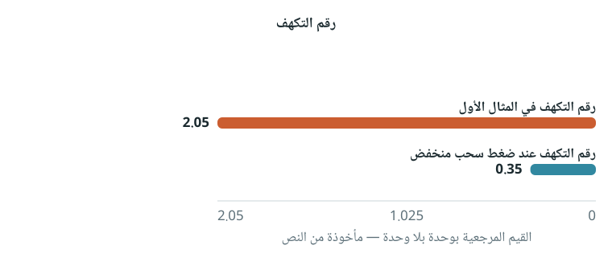

رقم التكهف
Cavitation number
رقم التكهف يقيس قرب سائل من التبخر الموضعي في مناطق الضغط المنخفض: σ = (p − p_v)/(½ρv²). إذا هبط الرقم تحت قيمة حرجة بدأ التكهف، فتنشأ فقاعات تنهار بعنف وتُحدث تآكلاً في المضخات والمراوح.
حين يمر سائل بسرعة عالية في مقطع ضيق، ينخفض ضغطه الموضعي. وإذا هبط الضغط إلى ضغط البخار عند درجة حرارة السائل، تبخر السائل موضعياً ونشأت فقاعات بخار. وعندما تنتقل الفقاعات إلى منطقة ضغط أعلى تنهار فجأة، فتنشأ موجة ضغط عالية تُحدث حفراً في المعدن. ورقم التكهف يقيس المسافة من هذه الحالة: σ = (p − p_v)/(½ρv²)، حيث p الضغط المرجعي وp_v ضغط البخار وv السرعة المرجعية. مثال: ماء عند 20 °C، p = 150 kPa، p_v = 2.34 kPa، ρ = 998 kg/m³، v = 12.0 m/s: σ = (150 000 − 2340)/(0.5×998×144) = 147 660/71 856 = 2.05.
كيف تعمل الظاهرة؟
عندما ينخفض الضغط الموضعي إلى ضغط البخار، لا يستطيع السائل البقاء في الحالة السائلة فتنشأ نوى بخار في الفقاعات الدقيقة الموجودة أصلاً. تنمو هذه الفقاعات وهي تعبر المنطقة المنخفضة الضغط، ثم تُحمل إلى منطقة أعلى ضغطاً فتنهار في زمن قصير جداً. والانهيار يولّد موجة ضغط تصل إلى مئات الميغاباسكال عند نقطة صغيرة، فتحفر المعدن وتُزيل طبقاته. ولهذا يظهر التكهف كحفر إسفنجية على سطح الريش، ويُضعف الأداء ويهزّ الجهاز.
العلاقة بالأرقام
σ = (p − p_v)/(½ρv²). مثال: ماء 20 °C، p = 150 kPa، p_v = 2.34 kPa، ρ = 998، v = 12.0 → σ = 147 660/71 856 = 2.05. والقيمة الحرجة لريشة مضخة نموذجية σ_c ≈ 0.3–0.6، فالتشغيل آمن عند 2.05. ولو زادت السرعة إلى 24.0 m/s لصار المقام أربعة أمثاله: σ = 147 660/287 424 = 0.514، أي عند حدّ الخطر.
مفاهيم متقاربة
يُفرَّق بين رقم التكهف ورقم التجويف: الثاني يُستعمل في المراوح البحرية ويُعرَّف بضغط عمود الماء. ويُفرَّق بين التكهف البخاري والتكهف الغازي: الأول بخار السائل نفسه وينهار بعنف، والثاني غاز مذاب ينتشر ولا ينهار بقوة. ويُفرَّد بين التكهف والتآكل: التآكل تفاعل كيميائي، والتكهف إجهاد ميكانيكي متكرر. وأخيراً يُفرَّق بين رقم التكهف المحلي ورقم التكهف المرجعي: الأول عند نقطة محددة، والثاني عند مقطع مرجعي.
حدود التطبيق
الرقم يعتمد على اختيار الضغط والسرعة المرجعيين، فلا تُقارن أرقام محسوبة عند مقاطع مختلفة. والقيمة الحرجة تعتمد على شكل الجسم وعلى محتوى السائل من النوى الغازية، فالماء المنزوع الغاز يتحمل أرقاماً أقل. ولا يصف الرقم شدة التلف، فقد يحدث تكهف خفيف بلا تلف ملموس. ولا يُستعمل وحده في تصميم المضخات دون هامش صافي سحب موجب، لأن الأخير يقيس الطاقة لا الضغط.

| الكمية | القيمة | المصدر |
|---|---|---|
| رقم التكهف في المثال الأول | 2.05 بلا وحدة | [1] |
| رقم التكهف عند ضغط سحب منخفض | 0.355 بلا وحدة | [1] |
المصادر
- 1 CODATA Value: molar gas constant — NIST — CODATA 2022 recommended values (2024). physics.nist.gov/cgi-bin/cuu/Value?r · اطُّلع عليه 2026-11-22
- 2 The International System of Units (SI), 9th edition (2019) — BIPM — Bureau International des Poids et Mesures (2019). www.bipm.org/en/publications/si-brochure · اطُّلع عليه 2026-11-22
- 3 The International System of Units (SI), 9th edition (2019) — BIPM — Bureau International des Poids et Mesures (2019). www.bipm.org/en/publications/si-brochure · اطُّلع عليه 2026-11-22
استشهد بهذا المصطلح
الصيغتان مبنيتان من بيانات الصفحة نفسها: العنوان والتاريخ ورابط النسخة المنشورة.
رقم التكهف — Cavitation number. (2026). ديوان المعرفة — انفراد. https://infiradev.com/diwan/terms/term-cavitation-number.html
@misc{term-cavitation-number2026,
title = {رقم التكهف},
titleaddon = {Cavitation number},
howpublished = {{ديوان المعرفة — انفراد} — مرجع علمي عربي},
year = {2026},
url = {https://infiradev.com/diwan/terms/term-cavitation-number.html},
urldate = {2026-11-26},
note = {مراجعة علمية: hermes (مراجعة معتمدة 2026-11-26)}
}
راجعه: hermes (مراجعة معتمدة 2026-11-26) · 2026-11-26 · آخر تحديث 2026-11-22